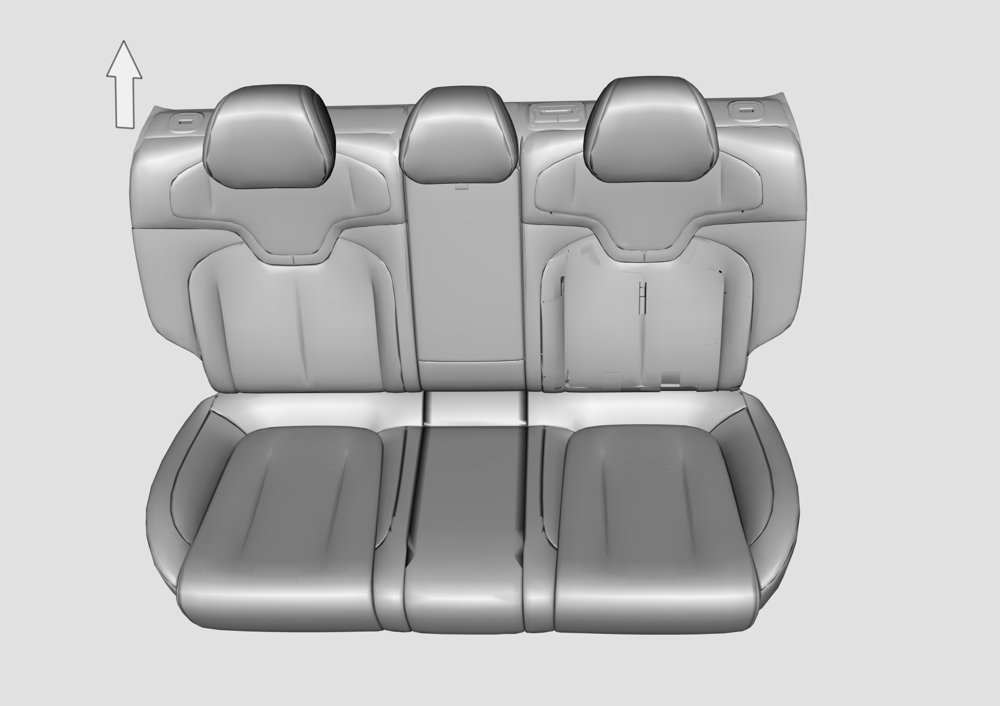
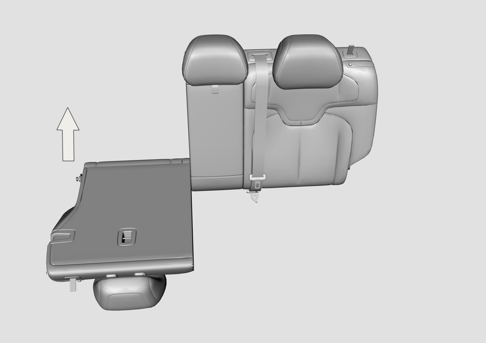
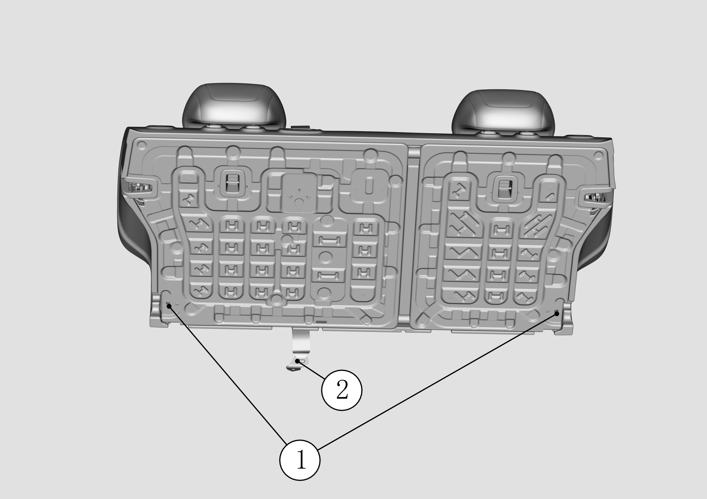
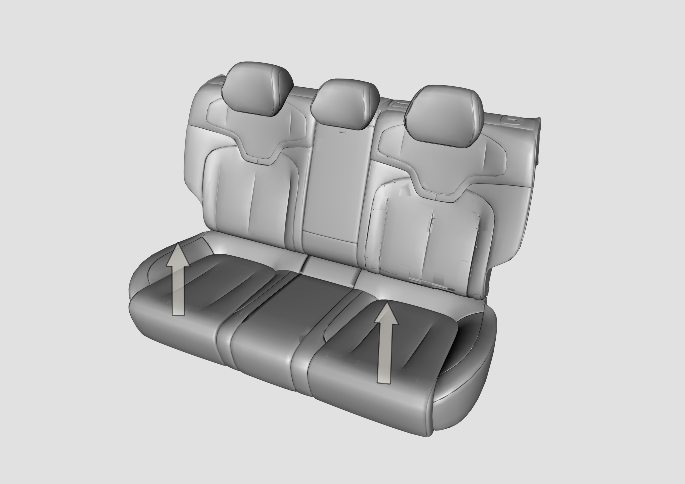
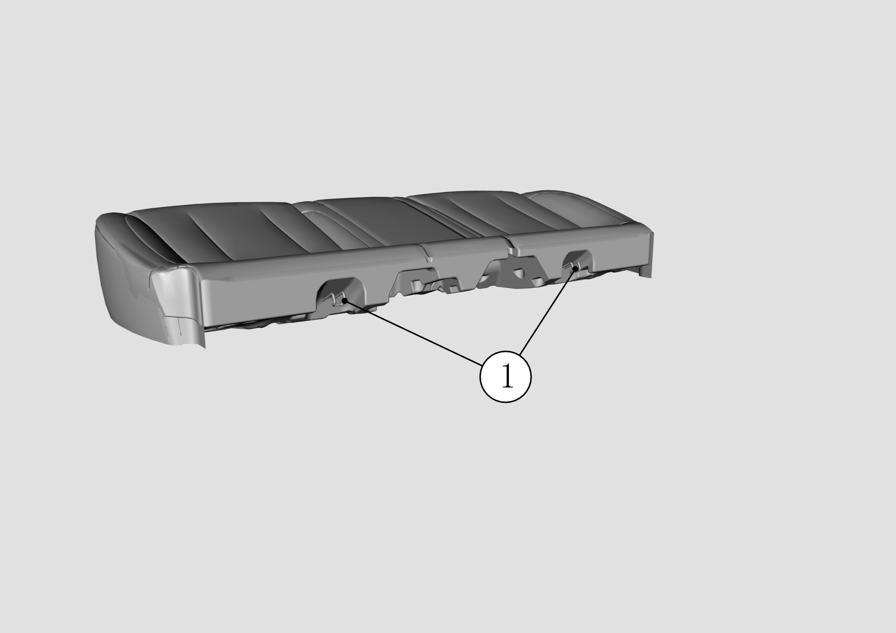
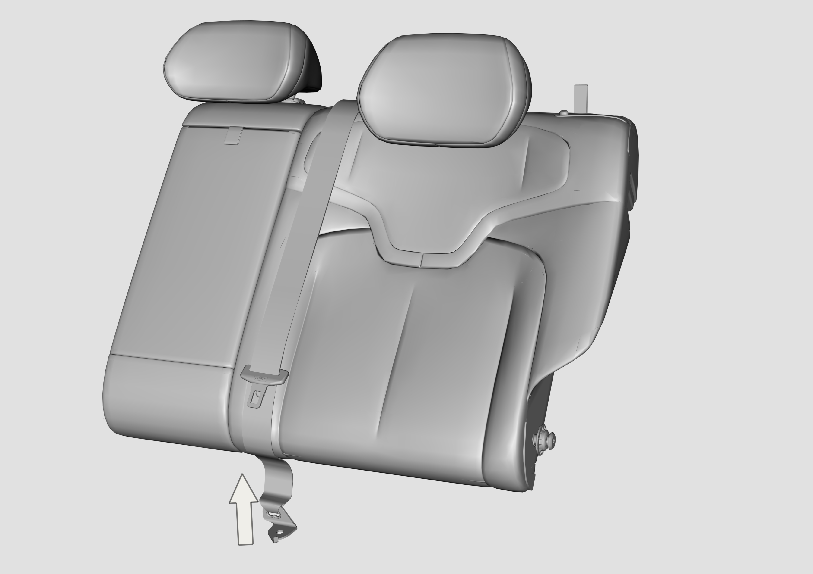

Потянуть вверх для разблокировки спинки и откинуть спинку сиденья (40%)

Приподнять левую сторону спинки сиденья (40%), вытянуть штифт с правой стороны и снять спинку сиденья (40%).

Способ демонтажа спинки сиденья (60%) аналогичен спинке (40%). Поскольку на спинке (60%) установлен замок ремня безопасности центрального пассажира заднего ряда, после снятия необходимо поместить спинку (60%) в багажное отделение и извлечь ее только после выкручивания болта нижней точки крепления ремня безопасности.
Цельная спинка: сначала с помощью торцевой головки 14 mm выкрутить крепежный болт ремня безопасности и пола кузова, затем с помощью торцевой головки 13 mm выкрутить крепежные болты бокового шарнира и сиденья, после демонтажа спинку можно снять; в завершение с помощью торцевой головки 19 mm выкрутить крепежные болты бокового шарнира и кузова.

Приподнять переднюю часть подушки сиденья (усилие следует прикладывать как можно ближе к точкам крепления во избежание деформации подушки) для освобождения подушки из монтажных фиксаторов, приподнять переднюю часть подушки и сдвинуть ее к задней части автомобиля для высвобождения крюков 1, после чего извлечь подушку сиденья


С помощью торцевой головки спецификации 14 выкрутить болт нижней точки крепления центрального ремня безопасности заднего ряда.

Установка выполняется в порядке, обратном снятию. При установке подушки трехместного сиденья пассажира необходимо пропустить замок ремня безопасности через отверстие в задней части подушки.